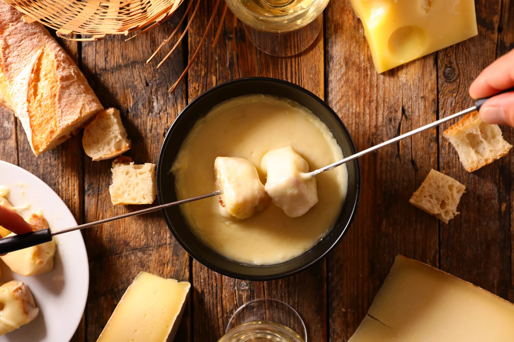
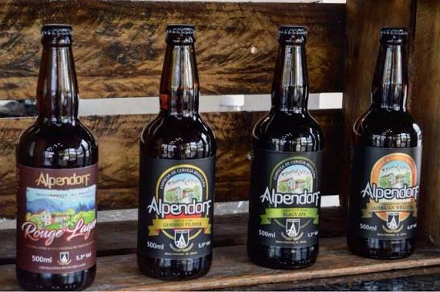
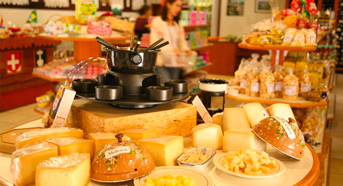
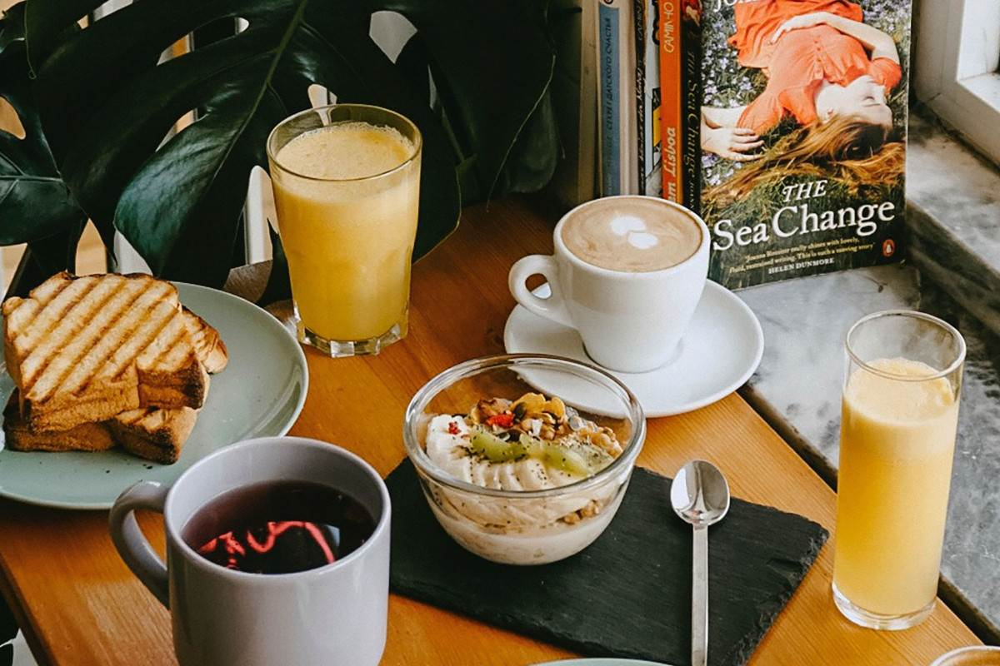

Gastronomia
- Culinária Suíça e Alemã
- Circuito Gastronômico da Truta
- Polo de Cervejas Artesanais
- Queijos Artesanais e Chocolates Finos
- Cafés de Altitude e Docerias
Fondues de queijo e chocolate, Raclette, Eisbein e Batata Rosti servidos nos restaurantes de Mury e do Centro para aquecer as noites frias de montanha.

Trutas frescas grelhadas com molhos de amêndoas, alcaparras e maracujá, preparadas com o peixe criado nas águas puras da região de Mury e Lumiar.

Rótulos premiados, IPAs e cervejas especiais produzidas na serra, disponíveis para degustação direto nas fábricas e pubs locais.

Laticínios de alta qualidade produzidos na Queijaria Escola e chocolates caseiros tradicionais perfeitos para degustar ou levar de lembrança.

Grãos especiais cultivados na própria região acompanhados de tortas alemãs tradicionais e Apfelstrudel nas docerias do Cônego e da Praça do Suspiro.
